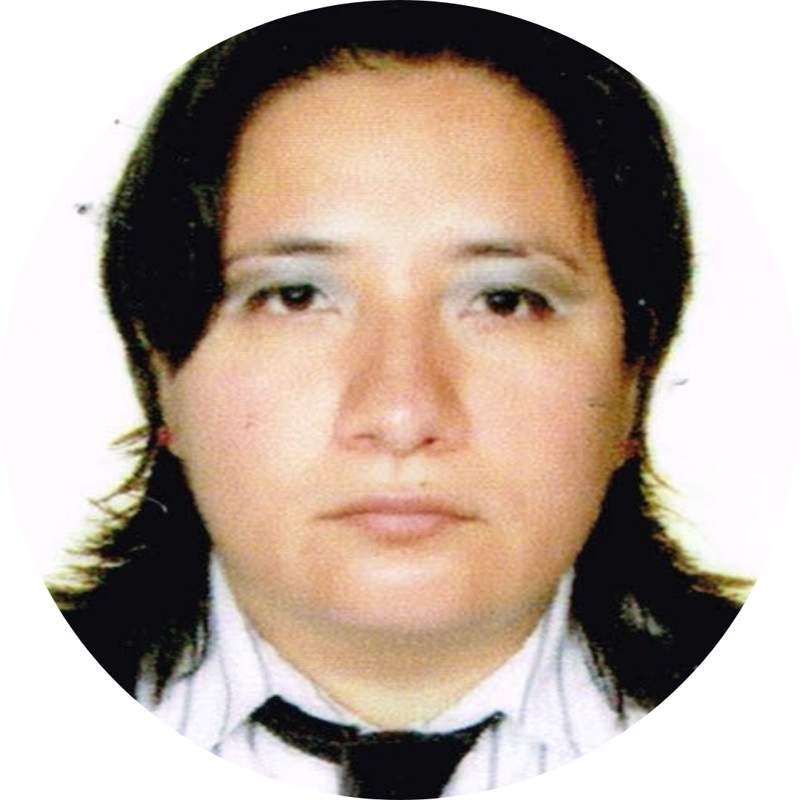

Somos un grupo de investigadores dentro de la UNAM FES Iztacala y respaldados por el laboratorio en investigación LÁPSIIT, CONACYT. Nuestra misión en SerenaMente es crear soluciones innovadoras que promuevan el bienestar emocional. Nos esforzamos por proporcionar herramientas accesibles y fáciles de usar que ayuden a las personas a llevar una vida más plena. Como grupo de investigación trabajamos en estrecha colaboración con psicólogos y profesionales en tecnología, para desarrollar soluciones basadas en la evidencia científica. En SerenaMente nos comprometemos a salvaguardar la privacidad de nuestros usuarios y proporcionar información clara sobre nuestros sistemas y procesos.
¿QUIÉNES SOMOS?
Dra. Lorena Alejandra Flores Plata
Dra. Anabel de la Rosa Gómez
Dr. José Alfredo Jiménez Benítez
Mtro. Javier Darío Ríos Castillo

Psic. Stephanie Cortes Abad
Psic. Griselda Suzán Montoya
Lic. Zuleyca Pérez Martínez
Mtra. Judith Rivera Baños

Pas. Ing. Luis Manuel Alvarado Romero